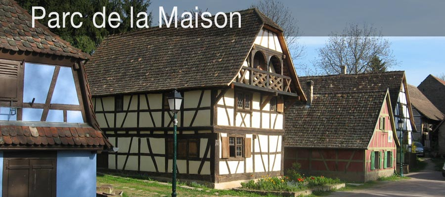

Teléfono
+33 (0)3 88 20 59 90

Escríbanos
Contacto para visitas, colegios, voluntariado y publicaciones.
+33 (0)3 88 20 59 90
livia.kuhn-poteur@orange.fr
Parc de la Maison Alsacienne, 34 rue Courbée, 67116 Reichstett, Francia
Rue du Terrain, 67116 Reichstett, después del parque de cigüeñas.